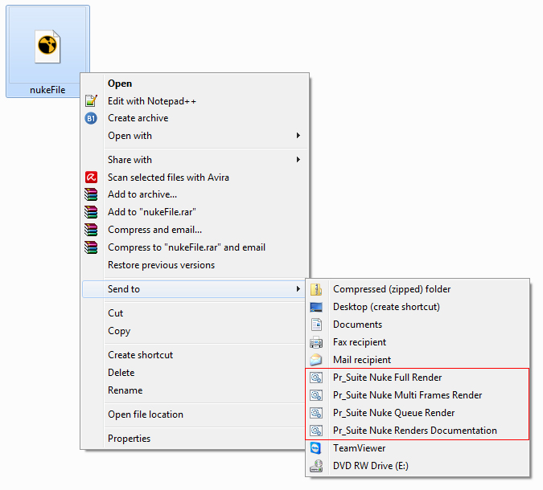

Pr_Suite Nuke Renders is a set of render scripts for rendering Nuke files without opening Nuke.
•To setup Pr_Suite Nuke Renders open Nuke version with which you want Pr_Suite Nuke Renders to be configured with.
•Go to Pr_Suite Nuke Menu and click on 'Setup Pr_Suite Nuke Renders'.

•A message will appear to confirm configuration, click Yes.

•Once configuration completes, a completion message will appear.

•Now Pr_Suite Nuke Renders is ready for use, right click on your Nuke file or folder with Nuke files, go to 'Send to' menu and choose one of available Pr_Suite Nuke Render for your rendering need.

•Click here for more information on Pr_Suite Nuke Renders.